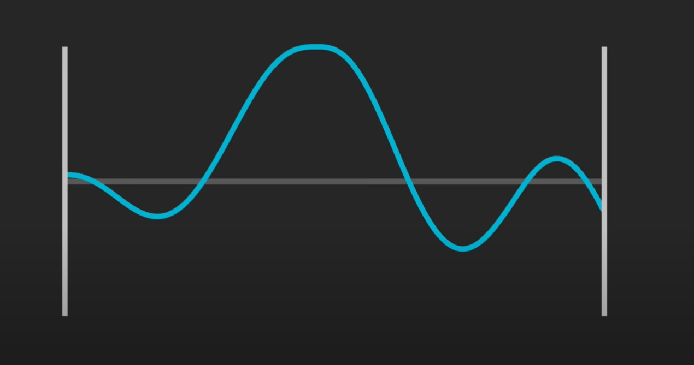
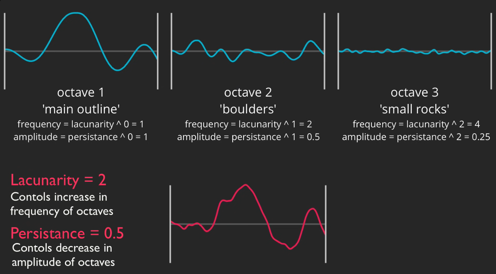
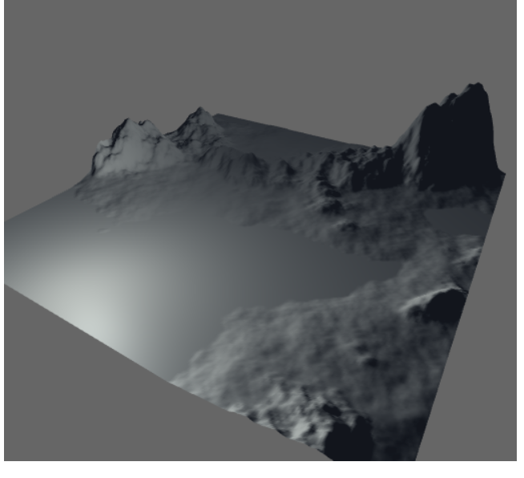
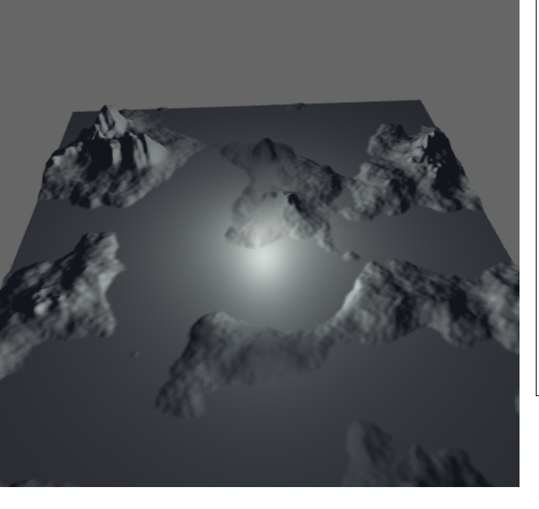
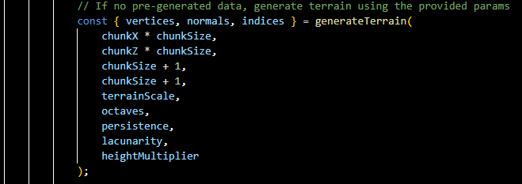
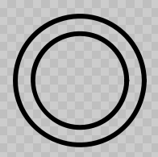

Tools: GLSL, WebGL, OpenGL
The goal of the project was to define some kind of terrain generation program. Any terrain would be fine but when we speak of terrain, we mostly refer to mountains just due to the variance in height maps and that calls for some interesting displays.
My task for the project was the terrain generation using noise functions. The project involved creating dynamic terrains that leverage the idea of layering multiple octaves of perlin noise. When the values of the noise are applied to the height (y) of the individual vertices of a plane, it will result in mountainous terrain. To better explain the process let's break it down starting with basics of different types of noise.
The values for each pixel are randomly picked between 0 and 1 for regular noise
Perlin noise is a more coherent type of noise where the changes from pixel to pixel occur more gradually. For both perlin and simplex-noise the values range from -1 to 1.
When taking a section of perlin noise and plotting the values between -1 and 1 on the y axis it looks roughly like mountains and valleys.
In an informative youtube video by Sebastian Lague, he delves into how the noise can be manipulated and layered using octaves to create finer details within the noise resulting in a more realistic mountainous terrain. Key Parameters: Amplitube - how high and low the noise goes Frequency - how bumpy or frequently the noise is.
As you can see from the diagram the 1st octave defines the general shape of the terrain (mountains and valleys). The 2nd octave adds slightly more detail (the ‘boulders’). And the 3rd octave is for the small fine details (like ‘small rocks’). To achieve this with multiple octaves is a very simple concept: as octaves increase the amplitude is gradually lowered while the frequency is gradually increased. The variables Lacunarity and Persistence are the controls for the amp and freq in the algorithm. Using multiple octaves (around 8 or 9) I was able to achieve these terrain examples which I am pretty happy with the outcome.
 Now obviously there is a little more going on here to achieve these results for the terrain, which I will briefly explain. The first and most noticeable feature is the sea level. And the second additional feature I added is the mountain multiplier (clear distinction of the big mountains). To achieve both of these features was actually rather simple. I implemented a helper function to the algorithm called applyHeightCurve which, like the name suggests, curves the height value obtained from the noise at given thresholds. So, when the height >= the mountain threshold, gradually scale the value to increase the height of the mountain.
For more details about the terrain generation using noise check out Sebastian Lague’s video which was great for helping us understand the concept behind using noise in terrain generation.
My Job was to populate Will’s noise data into the file structures and rendering formats.
I planned to make his terrain functions dynamic in put it in a class and make the renderer class too.The classes I made were:
Chunk Class - This class was made to call the generate Terrain function to get its data. It was also made in a way that chunks would be able to render anywhere and not just the center. It would basically be a child class to a larger renderer function that would call to render it based on the location of the player. Given we used noise, it was possible for the chunks to be discarded and reconstructed the exact same way.
Call to generate Terrain function by Will
Renderer Classes – They would manage multiple chunks. There were several iterations of this like AsyncRenderer as I tested different ideas, but the main one was Chunk Works.
What separates chunkworks from the rest is that the main worldrenderers was that they vanilla renderers were really slow as they loaded all their vertices as the player approached the boundaries of the chunk. The loading of surrounding chunks took > O(n3) time and so I tried to schedule the loads in the asyncRenderer so that they would finish at their own time and work in parallel. I learnt the hard way that Js has one thread and I couldn't even use compute shaders and so I had to fashion an abstraction called a web worker. This was able to do parallel processing that didn't stop the mainstream and so it has a structure of handlers, batching and promises to handle the construction of vertex Data. In a more advanced system, I would have more than one worker doing different parts of the construction process and I did plan on using it for sampling.
I also used a structure that allowed for render requests separate from load requests to make sure that there was little to no overhead when crossing a boundary. The smaller circle is the renderspace, the chunks to be rendered and the larger one is the load space which is where the chunks are preloaded to be rendered later. As the player crosses a boundary, the loaded chunks are gotten from the preloaded one and new ones are preloaded.
WaterChunk – I initially had a uniform called Sealevel to be passed to the shader to use as a max function to get flat seas. I ended up choosing to just get a flat plane around the world to show water. This would leave the height to taper off in the water which would be helpful in sampling ocean textures. I also planned to map the seas and get a cool ocean effect like a Sebastian Lague video.
Frustrum – This was supposed to be a class that Id use to clip the back portion of the player just to increase the speed at which the frames are rendered and reduce overhead. It never got implemented. The idea of frustrum culling is very popular in rendering.
Control System - I made a control system for the assignment that allowed the user to use the terrain like a game and move around as such. It used the WASD format.
We did plan on making some other things like
Texturing – Currently it just has the colors based on height which isn't intuitive but we were going to use the Normals in the fragment shader to get whether there’d be snow or grass on a surface. The fragment shader would have possibly had the texture values hardcoded. Everyone agrees on what color snow is, etc. The point was I didn't want to load textures when I was sampling going to be dealing with gradients and I was told I could use a lerp function to get a midpoint between gradients.
A Weather Biome System – This would allow for more dynamic looking terrain, rather than all grass, we could have snow and islandic regions. This would have been done with the noise.
Quadtrees possibly – This would be like the clipping which makes me think I wouldn't have needed it anyway. But I did think that this structure would be beneficial to allowing chunks to have dynamic values like biome, rather than trying to store the entire noise of the biome, we could store it in quads and dissect the tree till we have no constraints left.
100%